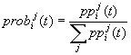
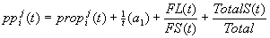
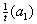
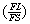
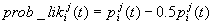
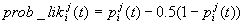
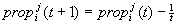

IS THERE A LEMON MARKET FOR MOVIES?
Kelly Lautt and Brit Grosskopf
MOTIVATION
How often have you gone to a movie that is really popular and hated it? How is it that a really bad movie can sometimes gain high popularity? What are the mechanisms underlying such a phenomenon and what does the pattern of sales over time suggest in terms of an explanation?
SETUP
The Movies: There are eight movies from which agents can chose. Each movie is characterized by 3 traits: quality, type and ad campaign. For our preliminary, rather simple model, each trait is binary. Quality is either good (1) or bad (0). It is either a Science Fiction movie (1) or a Drama (2). The movie has either had an aggressive ad campaign (1) or it has not (0). Clearly any of these parameters can be expanded for the future.
The Movie Characteristics
|
Movie Number |
Type |
Quality (q1) |
Ad Campaign (a1) |
|
Movie 1 |
1 |
0 |
1 |
|
Movie 2 |
1 |
1 |
1 |
|
Movie 3 |
1 |
0 |
0 |
|
Movie 4 |
1 |
1 |
0 |
|
Movie 5 |
2 |
0 |
1 |
|
Movie 6 |
2 |
1 |
1 |
|
Movie 7 |
2 |
0 |
0 |
|
Movie 8 |
2 |
1 |
0 |
The Play: 100 agents are placed on a 10x10 raster. Each agent has a group of friends (their N, S, E, W neighbours on the wrap-around raster). Each agent begins with the same propensity toward the two movie types (that is .5 toward Drama and .5 toward SciFi). Each agent then chooses one of the eight movies to see based on four criteria (in the current formulation, each agent plays in every round and every agent must chose a movie to see). Each agent sees their chosen movie and decides whether or not she likes it.
Each agent then updates all her information and preferences and plays again.
PLAY DETAILS AND DECISION RULES
Step 1:
In every round t, each agent must choose a movie j to see. Every agent i has a probability of seeing each movie (the sum of the probabilities of seeing each individual movie is one). This probability is calculated for each movie as follows:

where is a kind of propensity to see a movie.
Ad Campaign (a1): Some of the movies have had an aggressive ad campaign (before opening). This campaign has a decreasing effect over time on the agent’s probability of seeing the movie:

Learning from friends: Each agent has four friends around them and the agent is more likely to see a movie when more of her friends who have seen the movie have also liked it.
FL = # of friends who have seen the movie and liked it
FS = # of friends who have seen it
The FAD factor: Each agent is more likely to see a movie that a large number of people in the entire population have seen (no matter its quality, its type or how many of her friends did or did not like it)
TotalS(t) = The total number of agents in the entire population who have seen the movie
Total = The total number of agents in the population
Step 2:
Decision about whether the agent liked the movie or not:
Once the movie has been seen, each agent either likes the movie or does not in a probabilistic way that is skewed by the quality of the film:
If film quality is bad, q = 0: 
If film quality is good, q = 1: 
Where p is a random number between zero and one, thought to capture an intrinsic mood of liking or disliking any movie independently of the quality (e.g. mood of the day, partner who one sees the movie with…)
Step 3:
Updating the agents’ movie type propensity (prop):
If the agent liked the movie (determined from prob_lik in the same manner the movie seen was determined from prob), then the agent’s propensity toward the type of movie he just saw increases as such:
If he did not like the movie:

Again we thought to model a decreasing inclination to change one's taste toward a certain type of movie over time. As one gets older one may not be as open for changes.
Step 4: Start again with Step 1.
PATTERNS
When a movie first opens (ie. Before any agent has seen it), the movie may have had an aggressive ad campaign attached to it. Other than that, a person is only encouraged to go if they have a propensity toward that type of movie. In the beginning, agents are given neutral propensities and develop biased propensities over time based on their personal experience of several movies of the same type. Thus, from the beginning, movies with ad campaigns will be more likely to be seen. However, they will not be any more likely to be liked (as that depends on chance and the quality of the movie). It is possible that a given movie may, however, become very popular even when agents tend not to like it because the ad campaign increases the numbers of viewers at the beginning and that then feeds into the FAD factor. So it is very possible that poor movies (even movies that most people do not enjoy) can enjoy very high popularity (especially at the beginning of their run).